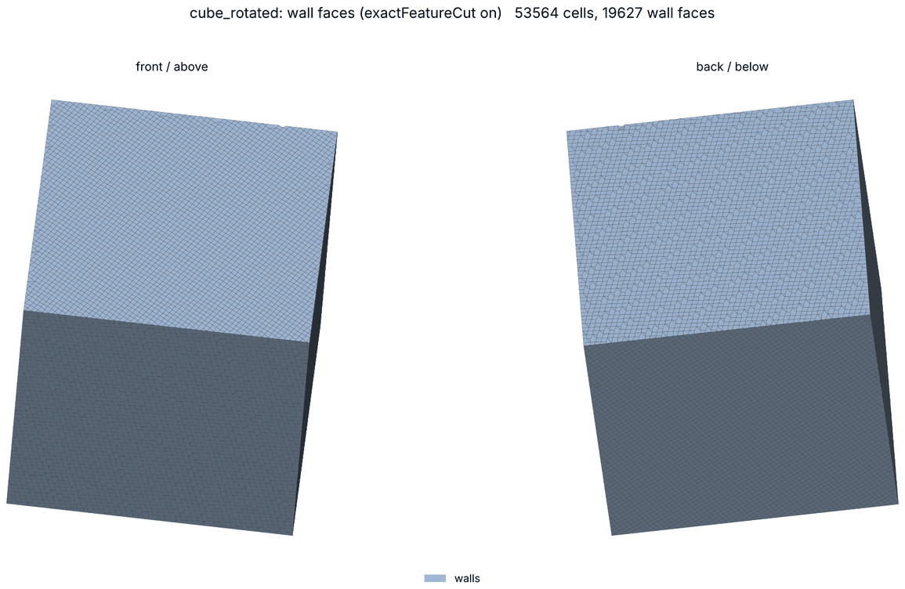
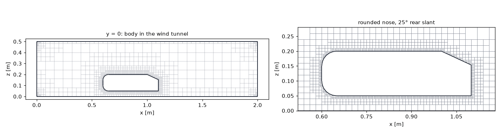
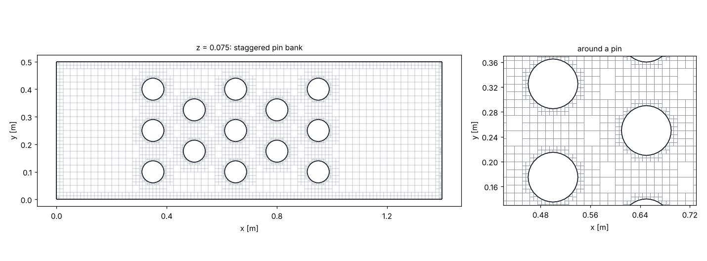

cutmesh
水密な STL の内部に八分木ベースの多面体メッシュを作り、OpenFOAM の constant/polyMesh を直接書き出すメッシャーです。
八分木のセルを STL で直接切断（カットセル）して壁面を作り、攪拌槽のような回転機械の回転ゾーンもメッシュ生成の中で切り出します。

更新情報
- v1.0.1
不具合の修正。v1.0.0 の点検で見つかった不具合を直しました（#68）。 スライディングメッシュで作ったケースを MRF の設定で作り直すと、前回の
constant/dynamicMeshDictが残り、ゾーンがメッシュの回転と MRF の両方で回っていました。cutmesh が書いたdynamicMeshDictとMRFPropertiesは、そのメッシュに該当するゾーンがなければ消します（自分で書いたファイルは消さずに警告します）。addLayersのrelativeSizes: false（厚さを絶対値で指定）では、minThicknessの既定値 0.05 が 5 cm と読まれて層がまったく付きませんでした。省いたときは局所セル寸法の 0.05 倍にします。このケースだけメッシュが変わります。addLayersとbaseMeshの値の大半を入力チェックが見ておらず、不正な値でトレースバックや無限ループ、メモリの使い果たしになっていました。スキーマ（仕様）に沿って調べ、項目名つきのエラーで止めます。スキーマが不正とする値（数値を文字列で書いたものなど）は、たまたま動いていたものもエラーになります。baseMesh.maxSizeRatioは 1 より大きい値にしてください（1 以下は終わりませんでした）。 ほかに、caseがファイルのときのトレースバック、featureCaps: 1を true と扱っていたこと、3.0のような整数値の小数を整数として受け付けないことを直しました。公開の例のメッシュは変わりません。 - v1.0.0
最初の安定版。meshDict の仕様を固定しました。1.x のあいだ、キーの削除・改名・意味の変更はしません（meshDict の互換性）。1.0 のキーと型・選択肢・必須のキーの一覧をテストに持ち、壊れる変更はテストで止まります。 v1.0 の条件（CI がすべて通る、既知のリークがない、公開の例が OpenFOAM の
checkMeshを通る、wheel で配布、meshDict の仕様の固定）をすべて満たしました。版ごとの変更を CHANGELOG にまとめました。メッシュは変わりません。 - v0.9.0
配布。Rust 拡張を組み込んだ wheel（Linux・Windows・macOS、Python 3.9 以上で共通）を作り、GitHub の Releases に置くようにしました。ダウンロードして
pip installするだけで、ビルドなしに速い版が入ります（PyPI には公開しません）。 1.0 以降の meshDict の互換性の方針を決め、廃止・改名したキーを読み替えて警告する仕組みを入れました。メッシュは変わりません。 - v0.8.0
信頼性。OpenFOAM（v2512）の
checkMeshを、攪拌槽の例とショーケースの全 15 例に CI で毎回かけるようにし、全例が「Mesh OK」になりました。cutmesh のバイナリ形式を OpenFOAM 本体で読めることも確かめています。 歪度 4 を超える壁面を持つ薄い切れ端（小さな切れ端どうしを統合したセルを含む）を、壁がへこまない範囲で取り除くようにしました（隙間 1 mm の例で 8 面 → 0 面）。 最小セルより薄い壁が別の壁と交わる所（天井の下の板など）のリークを直しました（合成形状thin_wallsで 518 か所 → 0）。 メッシュを意図して変えるプルリクエストは、ラベルmesh-changeでメッシュ比較の CI を通せるようにしました。 - v0.7.1
整理。時間のかかる段（八分木、スナップ、STL と回転ゾーンのカット、組み立てなど）の中の内訳をログとベンチマークの結果に出すようにしました。 版番号を一か所で管理し、
cutmesh --versionとログの先頭に出すようにしました。メッシュは変わりません。 高速化は v0.7.0 で区切り、これからは v1.0.0 に向けて信頼性と配布を進めます（ロードマップ）。 - v0.7.0
高速化 STEP3。メッシュが少し変わってもよい高速化を、品質の判定付きで入れました。八分木の細分化はサンプル点をやめて面・特徴線・円筒までの厳密な距離で判定し、
gapRefinementの隙間の判定は粗い下見で見つけた所だけを細かく調べ、スナップのやり直しは壊れたセルのまわりだけにしました（ほかに八分木の判定、組み立て、リーク検査の計算を削減）。 公開ベンチマークの傾けた攪拌槽（約 100 万セル、4 コア）で 28.3 → 約 20 秒、円筒ベースメッシュの例で 74.6 → 24.4 秒、gapRefinementを使う隙間の例で形状の準備が 50.6 → 8.8 秒（メモリ 6.2 → 1.4 GB）です。 メッシュが変わる変更は、ベンチマークの全ケースで「非直交 70° 超が 0、歪度 4 超が増えない、体積 0 以下のセルが 0、セル数 ±3%、境界層と特徴線が悪くならない」を満たすことを確かめています（run_bench.py --gate）。 - v0.6.0
高速化 STEP2。メッシュを変えずに、残っていた逐次の処理を並列化・Rust 化しました（スナップ、小さなカットセルの統合、八分木の 2:1 バランスとセルの組み立て、回転ゾーンのカット、面の対応づけ、セルの幾何計算など）。 約 850 万セルの実形状で約 100 秒 → 約 70 秒（メモリのピークは約 13 GB のまま）です（この実形状、公開ベンチマーク、実行例のメッシュがバイト単位で変わらないことを確かめています）。 実行例の時間を測り直しました（例: 攪拌槽 1.3 → 1.0 秒、隙間 1 mm の例 9.2 → 7.3 秒）。
- v0.5.1
メモリ使用量を削減。使い終わったデータ（八分木の面、カットの途中結果、検索構造とキャッシュ）を段階ごとに解放するようにしました。 メモリのピークは約 850 万セルの実形状で 30 GB → 約 13 GB、隙間 0.5 mm の例（約 200 万セル）で 7.8 GB → 3.4 GB です（100 万セルあたり約 1.5〜2 GB）。 メッシュと速さは変わりません。
- v0.5.0
高速化 STEP1。主な処理（octree、スナップ、STL と回転ゾーンのカット、セル統合、組み立て、品質チェック）を Rust 拡張に移して並列化しました。 約 850 万セルの実形状で 1209 秒 → 約 100 秒（約 12 倍）、メモリは 65 GB → 約 30 GB です（各段階で、この実形状と公開ベンチマークのメッシュがバイト単位で変わらないことを確かめています）。 実行例の時間を測り直しました（例: 攪拌槽 14.1 → 1.3 秒、隙間 1 mm の例 131 → 9.2 秒。測定マシンも 4 コアから 16 コアに変更）。 ほかに、円筒ベースメッシュのブロックの自動配置と、meshDict の作成フォームを追加しました。
- v0.4.0
格子に沿わない凸の鋭角エッジの厳密カット、回転ゾーンのスライディングメッシュ（AMI）界面、管・ダクト・鈍頭物体のショーケース、 STL と meshDict の入力検査を追加し、このドキュメントサイトを公開しました。
- v0.3.0
レベル遷移に掛かる薄いカットセルの分割、境界層の被覆率の向上（曲面の壁、凹の角）、八分木と境界層の高速化、 STL の重複・面積 0 の三角形の自動除去、ベンチマーク用のスイートを追加しました。
- v0.2.0
狭い隙間の中の回転ゾーン界面、非適合の回転ゾーン、円筒ベースメッシュ、セルより薄い隙間と壁の保持、 隙間の幅に合わせた自動細分化、凹のエッジの面取りの削減、狭い隙間での境界層の厚さの制限を追加しました。
- v0.1.0
最初の版。STL の内部の八分木カットセルメッシュ、OpenFOAM の polyMesh の書き出し、回転ゾーンの切り出し、 境界層（プリズム層）、Rust 拡張による幾何計算の高速化。
v0.1.0〜v0.4.0 の版と日付は、過去のコミットの区切りに後から割り振ったものです。版ごとの変更は CHANGELOG にもあります。
特徴
STL の内部をそのままメッシュに
solid 名ごとに壁パッチを作り、パッチ・特徴線・体積領域ごとに細分化レベルを指定できます。
回転ゾーンをカットで切り出す
円筒（寸法または STL）を切断して、円筒面そのものを内部面にします。cellZone・向きつきの faceZone・MRFProperties の雛形を出力します。
狭い隙間と薄い壁
セルより薄い隙間・壁を検出して細分化し、流体の閉塞や壁の消失（リーク）を防ぎます。隙間の幅に合わせた自動細分化もあります。
境界層
壁パッチにプリズム層を追加します。cutmesh 以外で作った polyMesh にも使えます。
円筒ベースメッシュ
回転機械向けに、八分木の根を軸まわりの同心ブロックにできます。
依存が少ない
Python 3.9+、numpy、scipy だけで動きます。メッシュ生成に OpenFOAM は不要です。Rust 拡張でメッシュ生成のほぼ全段階を並列化し、大幅に速くなります（攪拌槽の例で約 100 倍）。
クイックスタート
git clone https://github.com/mmer547/cutmesh.git
cd cutmesh
pip install -e .
python tools/build_rust.py # 任意: Rust 拡張（cargo が必要）
cd examples/stirred_tank
python make_geometry.py # サンプルの STL を生成
cutmesh meshDict.json # → case/constant/polyMesh設定は 1 つの JSON ファイルに書きます。最小限の例:
{
"domain": "model.stl",
"baseCellSize": 0.01,
"surfaceRefinement": { "default": 2 },
"patchTypes": { "inlet": "patch", "outlet": "patch" },
"case": "case"
}設定項目の一覧と各機能の説明は マニュアル にあります。
実行例






メッシュ品質は checkMesh と同じ式の自前チェックで確認しています。OpenFOAM 本体（v2512）の checkMesh は公開の例にだけ CI でかけているので、自分の形状では使う前に手元で checkMesh を実行してください。